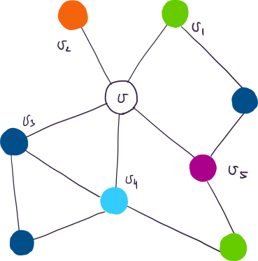

Определение: Пусть \(\mathcal{C} = \{\operatorname{Col}_i\}\)
некоторое множество, элементы которого назовем цветами или
красками. Пусть \(G = (V, E,
\partial)\) – граф. Отображение \(\nu:
V \to \mathcal{C}\) – раскраска графа \(G\)цветами из множества\(\mathcal{C}\). При этом вершина\(v\)покрашена в цвет\(\nu(v)\). Раскраска графа
правильная, если соседние вершины покрашены в различные цвета.
Минимальное количество красок, необходимое для правильной раскраски
графа – хроматическое число графа \(G\).
Определение: Пусть \(G =
(V, E, \partial)\) – граф. \(v \in
V\). Подграф графа \(G\),
состоящий из инцидентных \(v\) вершин и
ребер – линк вершины \(v\).
Обозначается:\(L(v)\).
Утверждение: Пусть \(G\) – простой конечный плоский граф. Тогда
у графа \(G\) существует вершина
степени не больше пяти.
Доказательство: сакраментальные формулы + формула Эйлера
\(\,\,\,\,\blacksquare\)
Теорема: (Хивуда о пяти красках) Пусть \(G\) – простой конечный плоский граф. Тогда
хроматическое число графа \(G\) не
превосходит \(5\).
Доказательство: Докажем по индукции по количеству
вершин.
База: Для \(n \le
5\) очевидно \(\,\,\,\,\blacksquare\)
Шаг:По
утверждению в \(G\) есть вершина
\(v\) степени не больше пяти. Пусть
\(G’\) – граф, полученный выбрасыванием
\(v\) и смежных с ней ребер. Вершины
графа \(G’\) можем раскрасить по
предположению индукции.
Если \(\operatorname{deg}v \ne 5\),
то покрасим \(v\) в цвет отличный от
цветов смежных с \(v\) вершин.
Пусть \(\operatorname{deg}v =
5\).
Если вершины из линка \(L(v)\)
вершины \(v\) покрашены менее чем в
пять цветов, то покрасим \(v\) в
оставшийся.

Занумеруем вершины смежные с \(v\) и
если надо переобозначим цвета, так, чтобы вершина \(v_i\) была покрашена в цвет \(\operatorname{Col_i}\). Рассмотрим
множество \(X\) вершин, в которые
существует путь из вершины \(v_1\),
проходящий только по вершинам, покрашенным в цвета \(\operatorname{Col_1}\) и \(\operatorname{Col_3}\). Если \(v_3 \not\in X\), то перекрасим вершины
множества \(X\): вершину цвета \(\operatorname{Col}_1\) в \(\operatorname{Col}_3\) и вершины цвета
\(\operatorname{Col}_3\) в \(\operatorname{Col}_1\), а \(v\) покрасим в \(\operatorname{Col}_1\).
Если \(v \in X\), то существует
маршрут из \(v_1\) в \(v_3\), проходящий только по вершинам цветов
\(\operatorname{Col}_1\) и \(\operatorname{Col}_3\). Добавив к нему
вершину \(v\) и ребра \(v_1v\) и \(v_3v\), получим цикл \(C\). По теореме Жордана этот цикл разбивает
плоскость на две компоненты, причем точки \(v_2\) и \(v_4\) лежат в разных компонентах, то есть
их нельзя соединить ломаной, не пересекающей \(C\). Рассмотрим множество \(Y\) вершин, в которые существует путь из
вершины \(v_2\), проходящий только по
вершинам, покрашенным в цвета \(\operatorname{Col_2}\) и \(\operatorname{Col_4}\). \(v_4 \not\in Y\), так как \(v_2\) и \(v_4\) нельзя соединить ломаной, не
пересекающей \(C
\,\,\,\,\blacksquare\)
Лемма Шпернера
Определение: Пусть \(\Gamma\) – связный простой плоский граф, и
выполнены следующие условия:
1. Любое ребро входит в границу
\(2\)-x граней. 2. Любая конечная
грань ограничена \(3\) ребрами (такая
грань – треугольник). 3. Объединение конечных граней \(W\) – ограничено простой замкнутой
ломаной. Тогда \(G\) –
триангуляция\(W\).
Теорема: (лемма Шпернера) Пусть \(W\) – треугольник, \(\Gamma\) – его триангуляция, причем вершины
треугольника являются вершинами графа \(G\). Пусть задана раскраска графа \(G\) в три цвета и выполнено:
Вершины треугольника покрашены в разные цвета.
Вершины треугольника, лежащие на одной стороне, покрашены в два
цвета.
Тогда существует треугольник триангуляции, вершины которого покрашены
в различные цвета, и таких треугольников нечетное число.
Доказательство:
Лемма: (лемма Шпернера в двумерном случае) Пусть
\(a = t_0 < t_1 < \ldots < t_{s - 1}
< t_s = b\) – разбиение отрезка \([a, b]\). И эти точки покрашены в два
цвета, причем точки \(a\) и \(b\) покрашены в различные цвета. Тогда
среди отрезков \([t_{i - 1}, t_i]\)
существует отрезок, концы которого покрашены в различные цвета, и таких
отрезков нечетное число.
Доказательство леммы:
\(\,\,\,\,\blacksquare\)
картинки лажа, но доказательство понятное \(\,\,\,\,\blacksquare\)
Как разрезать пирог,
чтобы никто не обиделся?
Упражнение: Пусть дан
прямоугольный пирог весом \(1\)
килограмм и три гостя. Нужно разрезать пирог двумя вертикальными
разрезами, так, чтобы каждый из троих гостей выбрал себе кусок и все
остались довольны, то есть все получили кусок ненулевой массы
из замкнутого множества своих предпочтений (пусть множество предпочтений
не зависит от предпочтений остальных гостей).
Решение: Все возможные разрезы описываются тройками чисел
\((x_1, x_2, x_3)\), где \(x_1 + x_2 + x_3 = 1\) и \(x_i > 0\). (\(x_i\) – вес \(i\)-ого куска).
Теорема Брауэра
Определение: Пусть \(f: X
\to X\) – отображение. \(x \in
X\) – неподвижная точка отображения\(f\), если \(f(x)
= x\).
Теорема: Непрерывное
отображение замкнутого \(n\)-мерного
шара в себя имеет неподвижную точку.